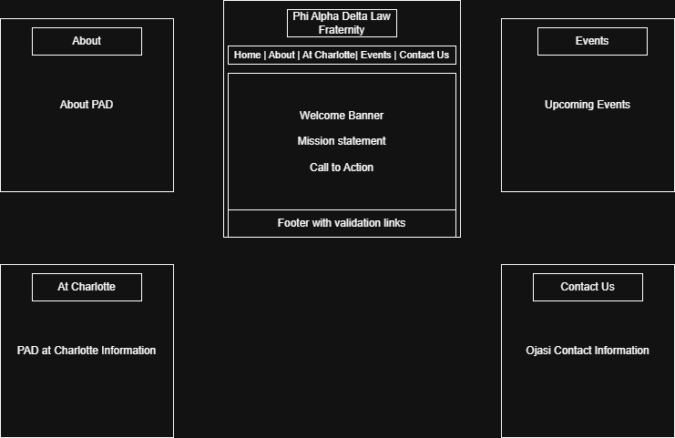
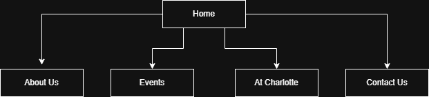

Project Overview
Overview
This project is a proposed five-page website for Phi Alpha Delta at UNC Charlotte. The website is intended to give visitors a clear, organized, and professional source of information about the organization, its chapter activities, its presence at UNC Charlotte, and the ways students can connect with the group.
Purpose
The purpose of the website is to improve the visibility of the organization and make chapter information easier to access. Instead of relying on scattered announcements or social media posts, users will be able to visit one website to learn about Phi Alpha Delta, review events, understand the chapter’s role on campus, and contact the organization for more information.
Intended Users
- Prospective members who want to learn more about the organization.
- Current members looking for chapter information and event updates.
- UNC Charlotte students interested in student organizations and professional opportunities.
- General visitors, supporters, or alumni seeking information about the chapter.
Content Overview
- General information about Phi Alpha Delta and its mission.
- Background information about the chapter and its goals.
- Event details and chapter activities.
- Information about the organization’s presence at UNC Charlotte.
- Contact information and a form for user inquiries.
Client Information
- Name: Ojasi Niphadkar
- Organization: Phi Alpha Delta at UNC Charlotte
- Email: oniphadk@charlotte.edu
- Phone: [Private]
Wireframe
The wireframe below shows the planned layout for the default page design of the website.

Site Map
The site map below shows the planned navigation structure for the five pages in the website.

Page Design
Home
- Purpose: Serve as the main landing page and introduce visitors to the organization.
- Audience: Prospective members, current members, UNC Charlotte students, and general visitors.
- Content: Welcome banner, mission statement, brief highlights, and links to key sections of the website.
- Data Entry: No.
- Validation: None.
- Buttons, Links, or Drop-downs: Navigation links and possible call-to-action buttons leading to About, Events, At Charlotte, and Contact Us.
- Actions: Users navigate to the rest of the site through the main links.
- Special Notes: This page should create a strong first impression and summarize the purpose of the website.
About
- Purpose: Explain the history, mission, and values of Phi Alpha Delta.
- Audience: Prospective members and visitors who want background information about the organization.
- Content: Organization background, chapter mission, values, and general chapter information.
- Data Entry: No.
- Validation: None.
- Buttons, Links, or Drop-downs: Navigation links and possible links to Events or Contact Us.
- Actions: Users read information and continue to other pages through the navigation menu.
- Special Notes: This page is mainly informational and should clearly explain what the organization stands for.
Events
- Purpose: Present information about chapter events, programs, and involvement opportunities.
- Audience: Current members, prospective members, and interested students.
- Content: Event titles, dates, descriptions, photos, and highlights from chapter activities.
- Data Entry: No, unless an optional interest form is later included.
- Validation: If a form is added, name and email fields would need validation.
- Buttons, Links, or Drop-downs: Navigation links, image controls, or event filters.
- Actions: Users browse event information and interact with event images or featured content.
- Special Notes: This page is a strong location for gallery-style or image-based interactivity.
At Charlotte
- Purpose: Describe the chapter’s role, involvement, and identity within the UNC Charlotte community.
- Audience: UNC Charlotte students, campus visitors, and prospective members.
- Content: Chapter-specific information, campus engagement, opportunities for students, and the organization’s connection to UNC Charlotte.
- Data Entry: No.
- Validation: None.
- Buttons, Links, or Drop-downs: Navigation links and possible links to Events or Contact Us.
- Actions: Users read campus-specific information and move to other pages as needed.
- Special Notes: This page should make the chapter feel connected to student life at UNC Charlotte.
Contact Us
- Purpose: Give visitors a direct way to contact the organization.
- Audience: Prospective members, interested students, supporters, and general visitors.
- Content: Contact form, organization email, and possibly links to social media or other communication platforms.
- Data Entry: Yes.
- Validation: The name field will be required, the email field will be required and checked for proper format, and the message field will also be required.
- Buttons, Links, or Drop-downs: Submit button, email links, and standard navigation links.
- Actions: Users complete the form and submit their message after validation.
- Special Notes: This page will contain the main form-based interaction on the website.
Dynamic Functionality
The website will include interactive features created with JavaScript, jQuery, jQuery UI, and AJAX. These features will make the website more engaging and will help it meet the technical requirements of the course project.
- Home Page: A rotating banner or image slider will highlight major chapter messages, featured content, or announcements.
- Events Page: An interactive image gallery or event display will allow users to browse activities in a more visual way.
- At Charlotte Page: A jQuery UI accordion or tab system may be used to organize campus-related information into clear sections.
- Contact Us Page: JavaScript form validation will check required fields before the form is submitted.
- AJAX Functionality: Event or gallery information may be loaded from a local JSON file to display content dynamically on the page.